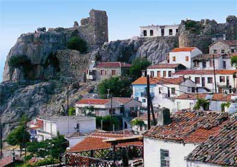

Το κάστρο της Σαμοθράκης
 Με τους Γενοβέζους και κυρίως με την οικογένεια των Γατελούζων έχει συνδεθεί η ιστορία του κάστρου της Σαμοθράκης (15ος αι.). Φορτωμένα με το βάρος αιώνων τα βυζαντινά και γενοβέζικα ερείπια των τριών πύργων της Παλαιόπολης, μαρτυρούν με τρόπους μυστικούς τα χρόνια που αποτελούσαν φεουδαρχικό οχυρό και στέγαζαν αφέντες και αφοσιωμένους στρατιώτες. Ο άλλος πύργος στο ακρωτήριο «του Φονιά», στο βορειοδυτικό άκρο του νησιού, επιτηρούσε τα στενά του Ελλησπόντου. Τους Γατελούζους διαδέχθηκαν οι Τούρκοι. Το νησί ενώθηκε με την υπόλοιπη Ελλάδα το 1912. | ||